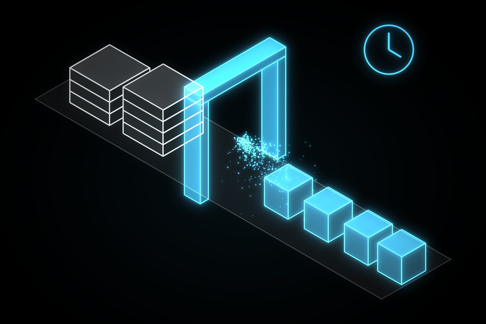
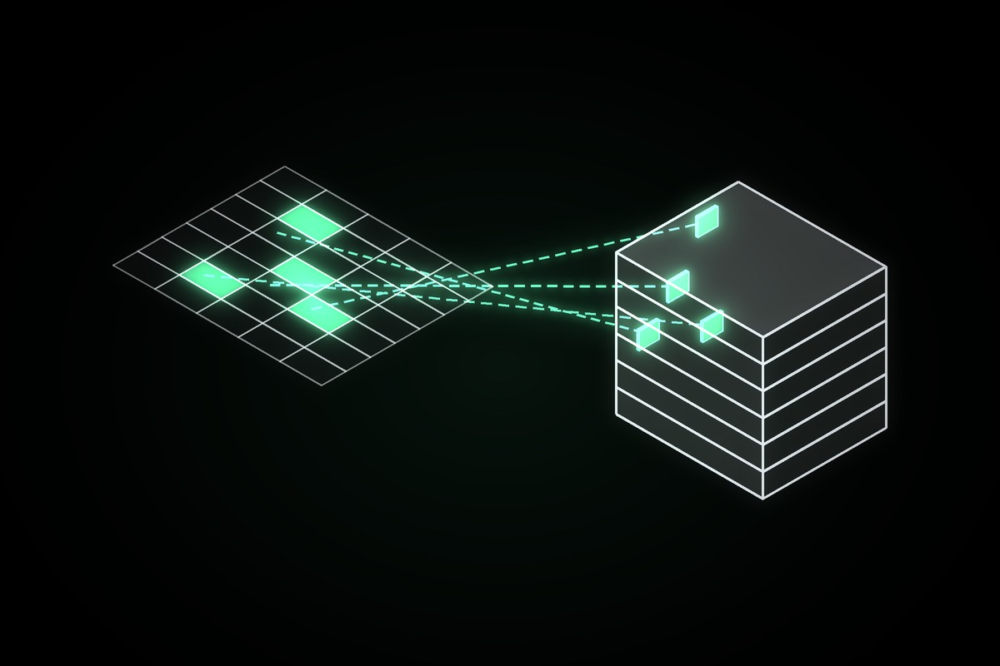

AutoIfcExporter
Server Pipeline | Revit · ACC · SharePoint
A scheduled, unattended pipeline. It indexes the models on Autodesk Construction Cloud, runs real Revit to export IFC with the project's own settings, publishes the results to SharePoint and emails a log, with no per-conversion cloud cost.
PowerBiRevitBridge
Integration | Power BI · Revit
Copy element IDs in a Power BI report and Revit selects and isolates those elements. A tray agent and a Revit add-in cooperate over the clipboard, and the add-in refuses to act if the open model doesn't match the report.

RevitNavigator
Integration | Excel · Revit
Select cells of element IDs in Excel, click one button and Revit selects those elements. A VSTO Excel add-in and a Revit add-in talk through a shared file, deployed together by one installer.
FamilyUpdater
Automation | Revit · Tray Watcher
Rolls changed families out to Revit models. A tray app watches the family folder and records changes, and the add-in offers what changed, loads it with overwrite and keeps a record so nothing is applied twice.
Revit2IFC_CloudTranslator
Desktop App | Python · APS API
A Python desktop app that converts ACC-hosted Revit files to IFC through the APS Model Derivative API, with no local Revit. Browse the hub tree, translate, download the IFCs and upload them back as new versions.
BatchProjectStandards
Automation | Revit · UI Automation
Transfers project standards from one cloud model to many, syncs each with central, then emails the run log and cleans up after itself. Unattended after the first selection, driving Revit's own dialogs through UI automation.